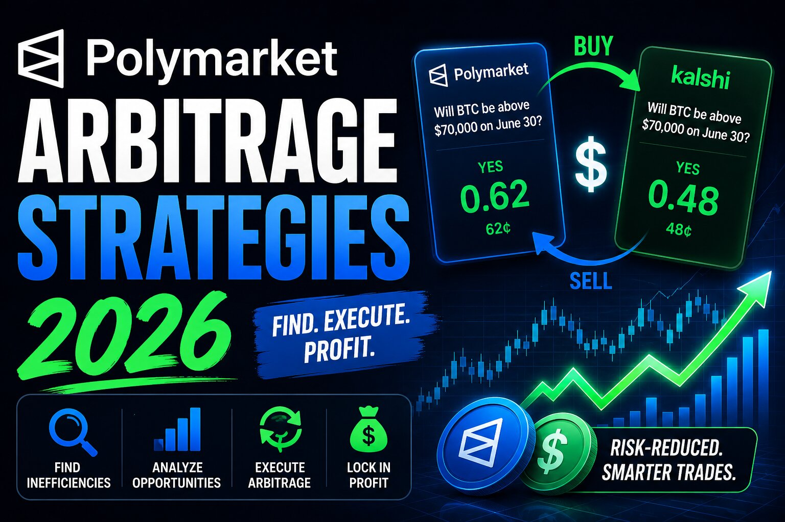

Polymarket Arbitrage Strategies 2026: What Still Actually Works

The short answer
The version of Polymarket arbitrage that made headlines in 2024 — spotting YES and NO priced under a dollar combined and clicking both sides for a locked profit — has mostly disappeared for manual traders. Independent research tracking tens of millions of trades found the typical arbitrage window shrank to a few seconds by 2026, and the large majority of what gets extracted goes to sub-second automated bots, not people watching charts. That doesn't mean arbitrage-adjacent edges are gone; it means the accessible ones in 2026 look different from the simple mispricing hunt that worked two years ago.
Why the easy version stopped working
Bid-ask spreads on liquid Polymarket markets have compressed sharply since 2023 as professional market makers and algorithmic bots moved in and started competing directly for the same gaps retail traders used to find by hand. A widely cited academic study of tens of millions of Polymarket trades estimated tens of millions of dollars in arbitrage profit extracted over a roughly year-long stretch — but found the bulk of it captured by the fastest bots, operating on timescales no human clicking a mouse can match. The practical result: if a YES/NO combo drifts visibly below a dollar in a market with real volume, it's very likely gone again before a manual trader can act on it.
Strategy 1: NegRisk and multi-outcome arbitrage
Markets with several mutually exclusive outcomes — who wins an election, which team wins a tournament — should have their YES prices sum to close to $1 across every outcome, since exactly one of them pays out. When that sum drifts meaningfully below $1, buying one share of every outcome locks in a profit regardless of which one wins. This structure, sometimes called NegRisk arbitrage on Polymarket, tends to surface more often than single-market mispricing because it requires watching relationships across many contracts at once rather than one order book — a harder thing for bots to fully saturate, which leaves more room for a patient trader running the math by hand or with a simple script.
Strategy 2: cross-platform arbitrage
The same real-world event is often listed on more than one platform — Polymarket, Kalshi, sometimes a traditional sportsbook for sports-adjacent questions — and the two rarely price it identically at every moment. Buying the cheaper side on one platform and the equivalent opposite side on another can capture the spread, assuming the underlying contract terms genuinely match. This remains one of the more accessible entry points for traders getting started with arbitrage-style approaches, precisely because it requires monitoring multiple venues rather than out-competing bots on a single order book — but it also carries the most execution risk: funded accounts on both platforms, contract wording that must resolve identically, and enough speed to fill both legs before the gap closes.
Strategy 3: liquidity rewards instead of pure arbitrage
Rather than chasing mispricings directly, some traders shift toward the maker side of the market. Polymarket pays rebates and separate liquidity-reward pools to traders who post resting limit orders near the midpoint of a market rather than executing immediately against existing ones — this is functionally different from classic arbitrage, since it doesn't lock in a guaranteed spread, but it produces a steadier, less latency-dependent source of return for traders willing to provide two-sided liquidity in markets they understand well. It requires more capital and more active management than clicking a single mispriced pair, but it doesn't require racing bots on speed.
Open-source tools worth knowing about
Given how much of this space now runs on speed, it's no surprise most of the active tooling is open source rather than proprietary. Two examples worth a look if you want to see how this is actually built rather than just discussed:
- ImMike/polymarket-arbitrage — a Python bot that scans thousands of markets across Polymarket and Kalshi at once, looking for both cross-platform mispricings and same-market YES/NO gaps, with a live dashboard and configurable risk limits. It ships with a simulation mode for testing the logic before touching real funds, which is a reasonable way to see how the detection actually works without capital at risk.
- CarlosIbCu/polymarket-kalshi-btc-arbitrage-bot — a narrower, purpose-built tool focused specifically on Polymarket's and Kalshi's hourly Bitcoin price markets, comparing the combined cost of opposing positions on each platform and flagging the moments when that combined cost drops under $1. Its scope is much tighter than a general-purpose scanner, which is exactly why it can move fast in the one category it watches.
Both are open-source, unaffiliated with Polymarket or Kalshi, and come with the caveats you'd expect from community-maintained trading software: read the code before running it with real funds, start in whatever dry-run or simulation mode is available, and treat early results skeptically until you've verified the logic yourself. Running a bot doesn't remove the execution and timing risk described above — it just gives you a faster, more consistent way to attempt to capture it.
What the realistic numbers look like
Reporting on Polymarket's trader base in 2026 suggests only a small single-digit percentage of wallets finish net profitable, with a tiny fraction of top accounts capturing a disproportionate share of total platform profit. For automated arbitrage specifically, industry estimates put realistic net annual returns after gas and fees in the high single digits to low double digits — a return profile that, after accounting for the infrastructure and development cost of running a bot, often doesn't clearly beat simpler passive alternatives. That's a useful corrective against any pitch promising easy, repeatable arbitrage income on Polymarket in its current, far more competitive state.
What still trips people up
Every one of these approaches degrades once fees, slippage, and timing are priced in. NegRisk arbitrage requires enough capital to buy every outcome leg at once, and a large enough gap to survive slippage across all of them. Cross-platform arbitrage lives or dies on whether two contracts actually resolve on the same criteria — subtle wording differences between platforms turn what looked like a locked spread into two unrelated directional bets. And liquidity provision carries its own risk: a market can move sharply against a resting limit order before it's filled or cancelled, which is a different kind of exposure than classic arbitrage but real exposure nonetheless.
Bottom line
Simple, risk-free YES/NO arbitrage on Polymarket is largely a 2024 story at this point — it still technically exists, but bots close the gap in a matter of seconds, and retail traders realistically won't win that race. The strategies with a genuine foothold left for a person in 2026 are multi-outcome mispricing across related markets, cross-platform spreads against Kalshi or similar venues, and providing liquidity for rebates rather than chasing a locked spread directly. None of them are free money, and all of them reward starting small, tracking results carefully, and treating any specific opportunity as a hypothesis to verify rather than a guarantee.
Disclaimer: This post is for informational purposes only and is not financial, legal, or tax advice. Prediction market trading carries risk of loss, including from execution delays, contract mismatches across platforms, and market moves against open positions. Reported win rates, arbitrage windows, and profitability figures reflect third-party research and public reporting rather than guaranteed or audited outcomes, and market conditions change quickly — verify current figures and platform terms before trading.